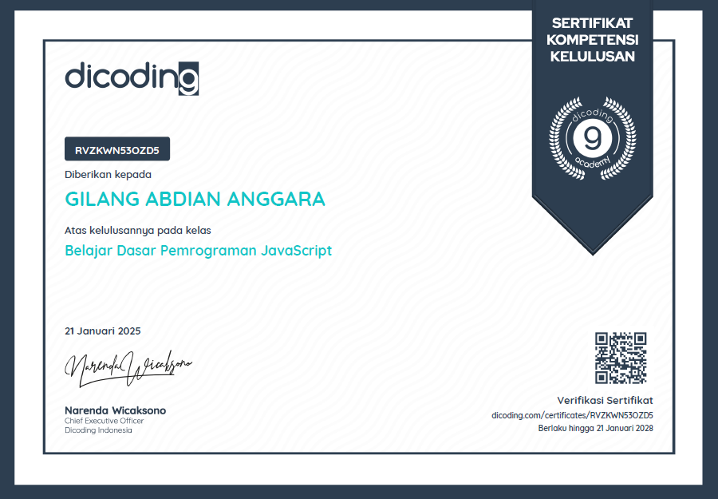

My Certificates
-

Belajar Dasar Pemrograman JavaScript – Dicoding Indonesia
mempelajari dasar JavaScript untuk pengembangan aplikasi web dengan Node.js, mulai dari sintaks, fungsi, struktur data, hingga asynchronous dan OOP. Disusun sesuai standar industri dan divalidasi oleh AWS, dengan total durasi pembelajaran 46 jam.